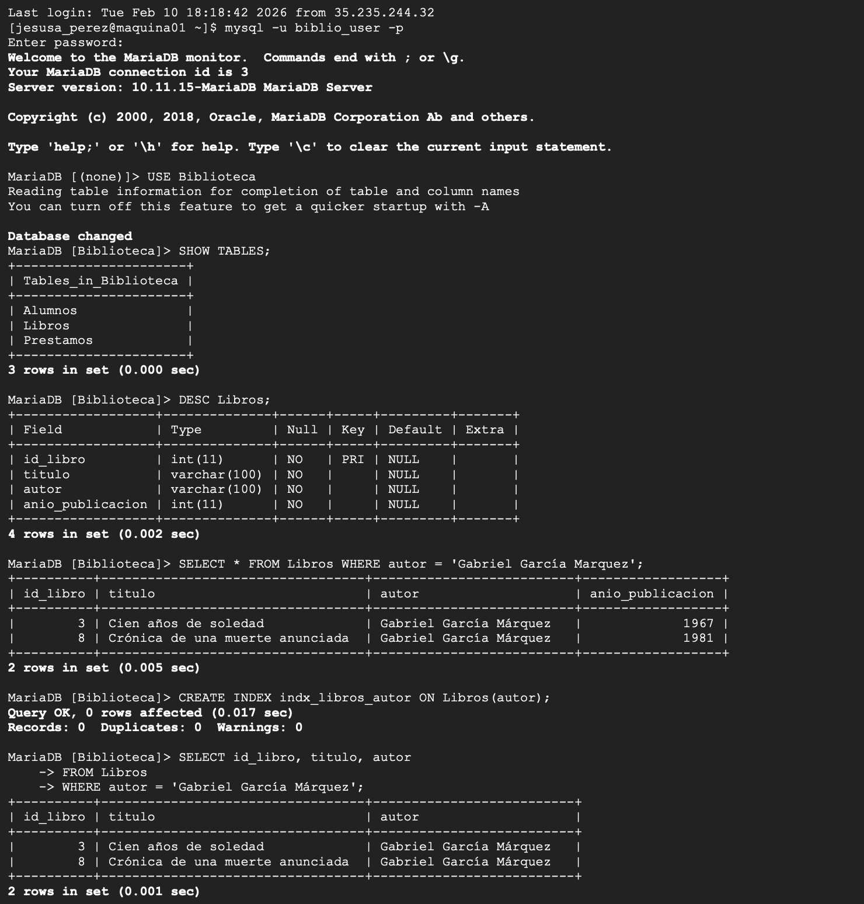
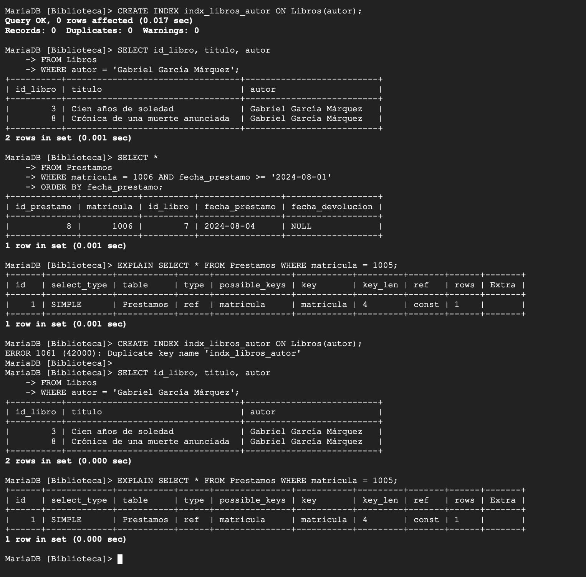
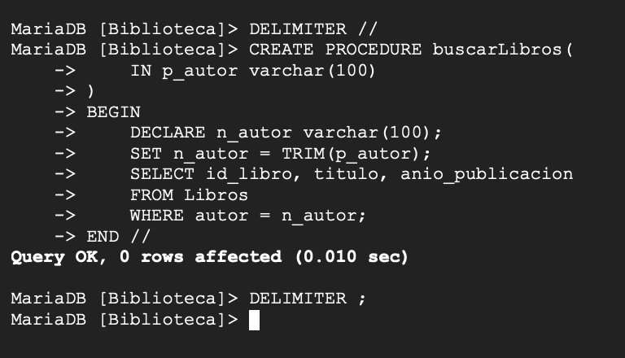
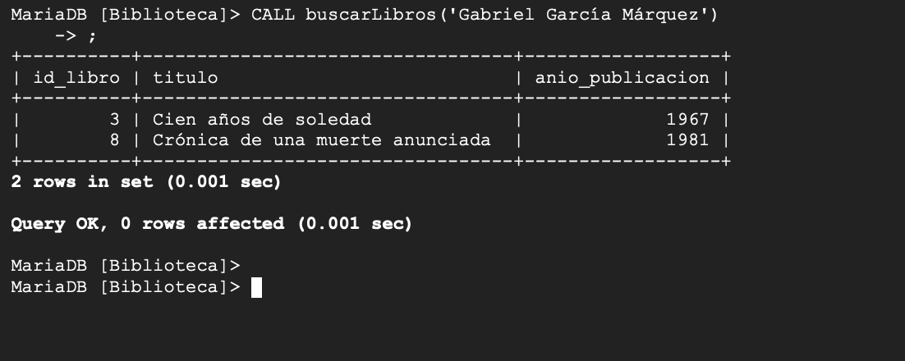
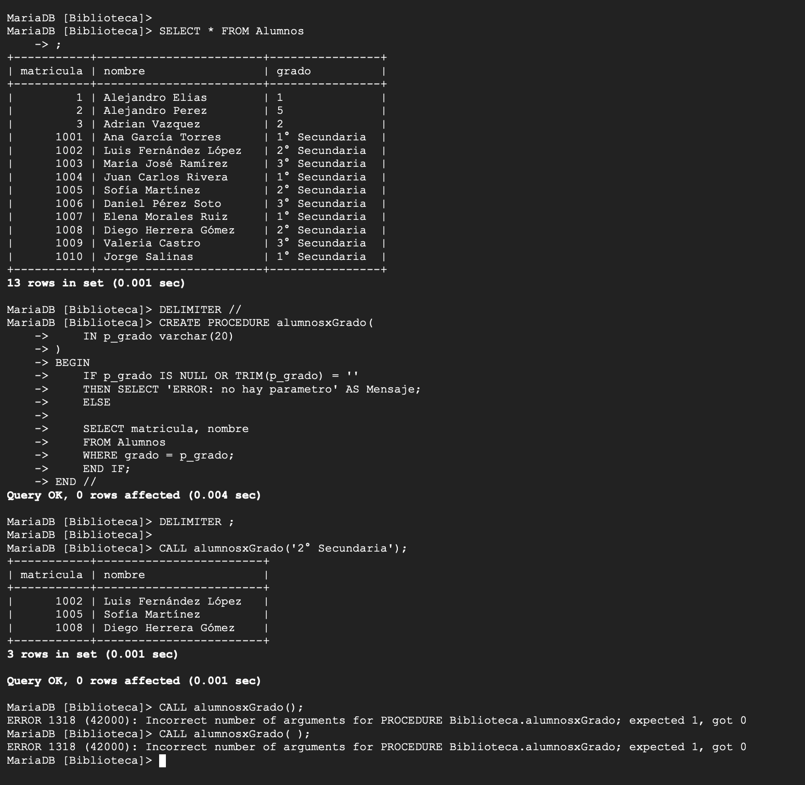

Tarea 07: Índices, EXPLAIN y Stored Procedures en MariaDB
Índice
- 1. Objetivo
- 2. Contexto del Ejercicio
- 3. Conceptos Técnicos
- 4. Desarrollo del Ejercicio
- 5. Evidencias de Ejecución
- 6. Calidad del Trabajo y Buenas Prácticas
- 7. Conclusiones
- 8. Autenticidad e Integridad Académica
- 9. Preguntas Frecuentes
- 10. Referencias APA
- 11. Historial de Versiones
- 12. Bitácora de Defensa Oral
1. Objetivo
Aplicar técnicas de optimización y automatización en MariaDB sobre la base Biblioteca mediante inspección del esquema, creación de índices, análisis de planes con EXPLAIN e implementación de stored procedures con parámetros y validaciones.
2. Contexto del Ejercicio
La práctica se realizó en el monitor de MariaDB con el usuario biblio_user. Se operó sobre tablas clave (Alumnos, Libros, Prestamos) para medir el impacto de indexar columnas de búsqueda y para encapsular consultas dentro de procedimientos reutilizables.
3. Conceptos Técnicos
Índices
Un índice reduce lecturas innecesarias al filtrar por columnas consultadas frecuentemente (por ejemplo, autor). A cambio, incrementa costo de mantenimiento en inserciones y actualizaciones.
EXPLAIN
EXPLAIN permite observar la estrategia del motor: método de acceso, posible índice utilizado y cardinalidad estimada. Es la forma práctica de comprobar si una optimización tuvo efecto.
Stored Procedures
Los procedures encapsulan lógica SQL en el servidor para evitar repetición y estandarizar operaciones. Al definirlos se usa DELIMITER y conviene validar parámetros para prevenir ejecuciones inválidas.
4. Desarrollo del Ejercicio
4.1 Conexión, selección de base y exploración de tablas
mysql -u biblio_user -p
USE Biblioteca;
SHOW TABLES;
DESC Libros;4.2 Consulta filtrada por autor
SELECT *
FROM Libros
WHERE autor = 'Gabriel García Márquez';4.3 Creación de índice y validación
CREATE INDEX indx_libros_autor ON Libros(autor);
SELECT id_libro, titulo, autor
FROM Libros
WHERE autor = 'Gabriel García Márquez';4.4 Consulta en Prestamos y análisis con EXPLAIN
SELECT *
FROM Prestamos
WHERE matricula = 1006
AND fecha_prestamo >= '2024-08-01'
ORDER BY fecha_prestamo;
EXPLAIN SELECT * FROM Prestamos WHERE matricula = 1005;
CREATE INDEX indx_libros_autor ON Libros(autor);La recreación de indx_libros_autor produjo error por nombre duplicado, confirmando que el índice ya existía y que el motor lo reconocía correctamente.
4.5 Stored Procedure: buscarLibros (parametrizado + TRIM)
DELIMITER //
CREATE PROCEDURE buscarLibros(
IN p_autor VARCHAR(100)
)
BEGIN
DECLARE n_autor VARCHAR(100);
SET n_autor = TRIM(p_autor);
SELECT id_libro, titulo, anio_publicacion
FROM Libros
WHERE autor = n_autor;
END //
DELIMITER ;
CALL buscarLibros('Gabriel García Márquez');4.6 Stored Procedure: alumnosxGrado (validación + error esperado)
SELECT * FROM Alumnos;
DELIMITER //
CREATE PROCEDURE alumnosxGrado(
IN p_grado VARCHAR(20)
)
BEGIN
IF p_grado IS NULL OR TRIM(p_grado) = '' THEN
SELECT 'ERROR: no hay parametro' AS Mensaje;
ELSE
SELECT matricula, nombre
FROM Alumnos
WHERE grado = p_grado;
END IF;
END //
DELIMITER ;
CALL alumnosxGrado('2° Secundaria');
CALL alumnosxGrado();5. Evidencias de Ejecución
Evidence 1

Exploración inicial: USE Biblioteca, SHOW TABLES y DESC Libros.
Evidence 2

Creación de índice en Libros(autor) y ejecución de consulta filtrada.
Evidence 3

Consulta sobre Prestamos, análisis con EXPLAIN y error 1061 por índice duplicado.
Evidence 4

Creación y ejecución de buscarLibros con parámetro de autor.
Evidence 5

alumnosxGrado con validación defensiva y error 1318 al llamar sin argumentos.
6. Calidad del Trabajo y Buenas Prácticas
- Optimización con criterio: índice aplicado en columna consultada de forma repetida.
- Diagnóstico técnico: uso de
EXPLAINpara validar estrategia de ejecución. - Reutilización: procedimientos parametrizados para encapsular lógica de consulta.
- Validación defensiva: control de nulos o vacíos en parámetros de entrada.
- Trazabilidad: evidencias incluyen resultados exitosos y errores reales.
7. Conclusiones
La actividad permitió combinar optimización y programación SQL en un mismo flujo: primero se mejoró el acceso a datos con índices, luego se comprobó el plan de ejecución con EXPLAIN, y finalmente se estandarizaron consultas con procedures. Los errores observados (índice duplicado y llamada sin parámetros) fortalecieron el proceso de prueba y depuración.
8. Autenticidad e Integridad Académica
Declaro que este trabajo fue ejecutado en un entorno real de MariaDB en Linux, y que las evidencias corresponden a comandos y resultados obtenidos durante la práctica, incluyendo intentos fallidos y correcciones.
9. Preguntas Frecuentes
¿Cómo saber si un índice sí está ayudando?
Comparando el plan de ejecución con EXPLAIN antes y después, y observando menor costo estimado o uso de índice.
¿Por qué TRIM en parámetros del procedure?
Porque evita que espacios accidentales rompan comparaciones exactas al buscar por autor o por grado.
¿Qué significa el error 1061?
Que intentaste crear un índice con un nombre que ya existe en la misma tabla.
10. Referencias APA
11. Historial de Versiones
| Versión | Fecha | Cambios | Autor |
|---|---|---|---|
| v1.0 | 2026-02-23 | Creación de actividad con desarrollo completo y evidencias. | Eugenio E. |
12. Bitácora de Defensa Oral
Respuesta: Porque sobreindexar aumenta costo de escritura y espacio; solo conviene indexar columnas con filtros frecuentes.
Respuesta: Mostró evidencia de cómo el motor planea la consulta y ayudó a justificar la indexación aplicada.
Respuesta: Control de parámetros vacíos o nulos para evitar resultados ambiguos y llamadas incorrectas.